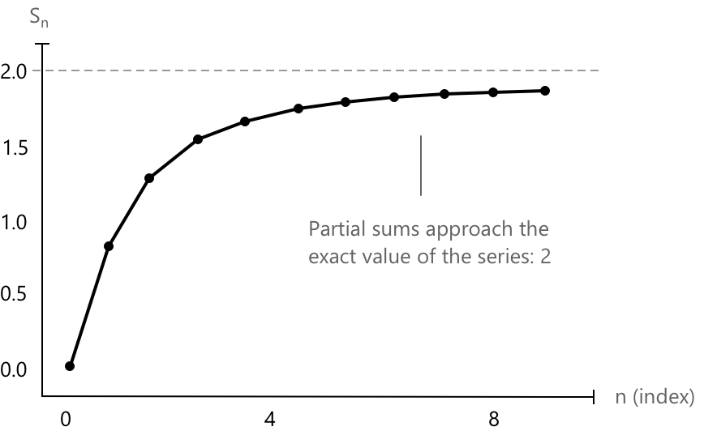

Критерій збіжності Коші для рядів
Вступ
Критерій Коші — це корисний інструмент для доведення того, що ряд є збіжним, без необхідності знати його суму. Замість обчислення точного значення ряду, критерій перевіряє, чи стають часткові суми зрештою довільно близькими одна до одної. Якщо ця умова виконується, ми можемо зробити висновок, що ряд збіжний, навіть якщо фактична границя залишається невідомою.
Цей критерій спирається на критерій збіжності Коші для послідовностей, який стверджує, що послідовність \( a_n \) є збіжною тоді і тільки тоді, коли:
\[ \forall \, \varepsilon > 0 \ \exists \, \nu \in \mathbb{N} \, : \, |a_n – a_m| < \varepsilon \quad \forall\, n, m > \nu \]
Приємною особливістю підходу Коші є те, що він дозволяє нам зрозуміти ряд, розглядаючи лише поведінку його часткових сум, не переслідуючи фактичне значення, до якого вони можуть наближатися. Така перспектива особливо корисна в доведеннях, де важлива структура аргументу, а не кінцевий числовий результат.
Критерій збіжності Коші
Нехай \( \sum_{k=1}^{\infty} a_k \) — ряд. Згідно з критерієм Коші, ряд є збіжним тоді і тільки тоді, коли виконується наступна умова:
\[ \forall \, \varepsilon > 0 \ \exists \, \nu \in \mathbb{N}\, : \ \left| \sum_{k=\nu+1}^{\nu+p} a_k \right| < \varepsilon \quad \forall \, p \in \mathbb{N} \]
Простими словами, сума будь-якого «хвоста» ряду, починаючи з деякого достатньо великого індексу, має бути довільно малою. Це гарантує, що часткові суми стають все ближчими і ближчими, що означає збіжність.
Щоб довести це, ми застосуємо критерій збіжності Коші для послідовностей до заданого ряду.
- Нагадаємо, що ряд \( \sum a_k \) збіжний тоді і тільки тоді, коли послідовність його часткових сум \( s_n = \sum_{k=1}^{n} a_k \) є збіжною.
- Отже, ряд збіжний тоді і тільки тоді, коли послідовність \( (s_n) \) є послідовністю Коші.
У випадку ряду різницю між двома частковими сумами можна записати як:
\[ s_{n+p} - s_n = \sum_{k=n+1}^{n+p} a_k \]
Взявши абсолютне значення, отримаємо:
\[ |s_{n+p} – s_n| = \left| \sum_{k=n+1}^{n+p} a_k \right| \]
Простіше кажучи, критерій Коші для послідовностей вимагає, щоб:
\[ |s_{n+p} - s_n| < \varepsilon \]
для всіх \( p \in \mathbb{N} \), за умови, що \( n \) достатньо велике. У нашому випадку вираз:
\[ \left| \sum_{k=n+1}^{n+p} a_k \right| \]
представляє собою «хвіст» ряду. Якщо цей хвіст стає малим, коли \( n \) достатньо велике, тоді він поводиться точно так само, як \( \varepsilon \) в умові Коші для послідовностей. Іншими словами, хвіст відіграє роль різниці, яку ми хочемо зробити довільно малою. З цієї причини критерій вважається доведеним.
Приклад 1
Скористаймося критерієм Коші, щоб довести, що геометричний ряд:
\[ \sum_{k=0}^{\infty} x^k \]
збіжний, коли \( |x| < 1 \). Розглянемо хвіст ряду, починаючи з індексу \( n+1 \):
\[ \left| \sum_{k=n+1}^{n+p} x^k \right| = \left| x^{n+1} + x^{n+2} + \dots + x^{n+p} \right| \]
Це скінченна геометрична сума, яку ми можемо обчислити явно:
\[ \left| \sum_{k=n+1}^{n+p} x^k \right| = \left| x^{n+1} \cdot \frac{1 – x^p}{1 – x} \right| = \frac{|x|^{n+1} \cdot |1 - x^p|}{|1 - x|} \]
Оскільки \( |x| < 1 \), маємо \( |x|^{n+1} \to 0 \) при \( n \to \infty \), а інші множники залишаються обмеженими. Отже, для будь-якого \( \varepsilon > 0 \) ми можемо знайти \( n \) достатньо великим, щоб весь вираз був меншим за \( \varepsilon .\)
Це працює саме тому, що \( x^k \) є загальним членом геометричної послідовності.
Це показує, що хвіст стає довільно малим, що задовольняє критерій Коші.
Приклад 2
Тепер доведемо, що геометричний ряд:
\[ \sum_{k=0}^{\infty} x^k \]
збігається для конкретного значення, наприклад \( x = 0.5 \). Оскільки \( |x| < 1 \), ми очікуємо, що ряд буде збіжним. Щоб застосувати критерій збіжності Коші, розглянемо розмір хвоста:
\[ \left| \sum_{k=n+1}^{n+p} x^k \right| \]
Ми можемо обчислити суму за допомогою формули:
\[ \sum_{k=n+1}^{n+p} x^k = x^{n+1} \cdot \frac{1 – x^p}{1 – x} \]
Взявши абсолютне значення, отримаємо:
\[ \left| \sum_{k=n+1}^{n+p} x^k \right| = \frac{(0.5)^{n+1} \cdot |1 - (0.5)^p|}{|1 - 0.5|} = 2 \cdot (0.5)^{n+1} \cdot |1 - (0.5)^p| \]
Тепер зауважимо:
- \( (0.5)^{n+1} \to 0 \), коли \( n \to \infty \)
- \( |1 – (0.5)^p| \leq 1 \) для всіх \( p \in \mathbb{N} \)
Отже:
\[ \left| \sum_{k=n+1}^{n+p} x^k \right| \leq 2 \cdot (0.5)^{n+1} \]
Оскільки права частина прямує до нуля при \( n \to \infty \), для будь-якого \( \varepsilon > 0 \) ми можемо знайти достатньо велике \( n \), щоб:
\[ \left| \sum_{k=n+1}^{n+p} x^k \right| < \varepsilon \quad \text{для всіх } p \in \mathbb{N} \]
Ця поведінка проілюстрована на наступному графіку, який показує, як часткові суми \( s_n \) швидко наближаються до точного значення ряду, яке дорівнює \(2\) при \( x = 0.5 \).

Це задовольняє критерій збіжності Коші. Отже, ряд збігається для \( x = 0.5 \).
Глосарій
-
Критерій Коші: математичний тест, що використовується для визначення збіжності послідовностей і рядів без обов'язкового знаходження границі або суми.
-
Збіжний ряд: ряд, послідовність часткових сум якого наближається до скінченної границі.
-
Часткові суми \( s_n \): сума перших \( n \) членів ряду, \( s_n = \sum_{k=1}^{n} a_k \).
-
Послідовність Коші: послідовність, у якій члени стають довільно близькими один до одного в міру просування послідовності.
-
Епсилон \( \varepsilon \): маленьке додатне число, що зазвичай використовується в означеннях granic і неперервності для представлення довільно малої відстані.
-
Ню \( \nu \): індекс (зазвичай ціле число), який є достатньо великим, щоб задовольнити задану умову в означенні збіжності.
-
Хвіст ряду: сума членів ряду, починаючи з певного індексу, часто представляється як \( \sum_{k=\nu+1}^{\infty} a_k \) або, в контексті критерію, скінченна частина хвоста \( \sum_{k=\nu+1}^{\nu+p} a_k \).